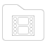

para crear un proyecto. para crear un proyecto.
para crear un proyecto. para crear un proyecto.Los videos exportados se encuentran en la carpeta "export" (en KineMaster/Export/).
Cuando KineMaster abre por primera vez, los proyectos existentes ahora se muestran en una lista que puede desplazarse hacia arriba y hacia abajo.
Esta lista está ordenada con los proyectos más recientemente editados primero. Para ordenar la lista alfabéticamente, como en las versiones anteriores de KineMaster, puede cambiar el orden en Ajustes.
Para reproducir , compartir
, compartir , editar
, editar  , o eliminar
, o eliminar un proyecto, toque la miniatura del proyecto para abrir sus detalles y opciones.
un proyecto, toque la miniatura del proyecto para abrir sus detalles y opciones.

Al editar un proyecto, los botones para deshacer  o rehacer
o rehacer  ediciones, y cambiar el tema
ediciones, y cambiar el tema  ahora aparecen a la izquierda de la pantalla de vista previa del video.
ahora aparecen a la izquierda de la pantalla de vista previa del video.  también está disponible para que los proyectos ahora se puedan compartir directamente tan pronto como se hayan terminado de editar.
también está disponible para que los proyectos ahora se puedan compartir directamente tan pronto como se hayan terminado de editar.
Toque  para cambiar los ajustes del proyecto.
para cambiar los ajustes del proyecto.

A la derecha de la vista previa del video, todavía están disponibles los botones añadir medios  y audio  , pero la narración ahora se puede grabar directamente con Voz
, pero la narración ahora se puede grabar directamente con Voz  . Toque
. Toque  para tomar fotos con la cámara o grabar un video nuevo con la filmadora.
para tomar fotos con la cámara o grabar un video nuevo con la filmadora.
Ahora para añadir una etiqueta o escribir a mano en un proyecto, añada una capa al proyecto tocando  .
.
Ahora la línea de tiempo se puede ampliar tocando  en vez de deslizando hacia arriba, y
en vez de deslizando hacia arriba, y  mueve el cabezal de reproducción al inicio del proyecto.
mueve el cabezal de reproducción al inicio del proyecto.
Ahora para eliminar un clip, tóquelo y luego toque  a la izquierda de la vista previa del video.
a la izquierda de la vista previa del video.
Tocar un clip aún muestra las opciones edición de efectos, pero aparecen como una lista extendida a la derecha de la vista previa de video.

Para capturar un fotograma de un clip como imagen, toque  en la izquierda para las opciones, pero ahora para dividir e insertar un fotograma fijo, abra el menú Recortar/Dividir de la derecha. Ahora puede compartir un proyecto directamente desde la ventana de edición, al igual que desde los detalles del proyecto tocando
en la izquierda para las opciones, pero ahora para dividir e insertar un fotograma fijo, abra el menú Recortar/Dividir de la derecha. Ahora puede compartir un proyecto directamente desde la ventana de edición, al igual que desde los detalles del proyecto tocando  . Seleccione primero el destino para compartir y luego elija el nivel de calidad. Si lo desea, elija un suscripción después de elegir a dónde compartir.
. Seleccione primero el destino para compartir y luego elija el nivel de calidad. Si lo desea, elija un suscripción después de elegir a dónde compartir.